Cardiologia · 99 min · PTB-XL · monografia
O eletrocardiograma é o exame que mais se pede e o que menos se aprende a ler por conta própria. Este texto percorre o caminho inteiro na ordem em que ele se usa: o que cada onda representa no sistema de condução, como as doze derivações olham o coração de doze ângulos, o que conferir no papel antes de interpretar qualquer coisa, e então a sequência que transforma o traçado em diagnóstico — frequência, eixo, onda P, complexo QRS, intervalo PR, largura do QRS, repolarização. Os traçados são de pacientes reais, com ruído e linha de base torta, que é como o exame chega no plantão.
O eletrocardiograma não mostra o coração: mostra a soma dos potenciais elétricos que atravessam o músculo cardíaco, projetada sobre eixos definidos pela posição dos eletrodos. Tudo o que se lê no papel decorre de uma regra única — frente de despolarização que se aproxima do eletrodo produz deflexão positiva; que se afasta, negativa. Onda perpendicular ao eletrodo produz deflexão isodifásica, com componentes positivo e negativo de amplitudes iguais. Essa regra explica por que a mesma batida gera um traçado diferente em cada uma das doze derivações, e por que aVR é quase sempre negativa num coração normal.
O impulso percorre uma sequência fixa. O nó sinusal, no alto do átrio direito, dispara espontaneamente e é o marca-passo natural. A despolarização se espalha pelos átrios — é a onda P, cuja porção inicial corresponde ao átrio direito e a final ao átrio esquerdo. Ao chegar ao nó atrioventricular, o impulso sofre um retardo fisiológico, de propósito: é esse atraso que permite ao átrio terminar de encher os ventrículos antes da sístole. No traçado, o retardo aparece como o segmento PR isoelétrico, entre o fim da P e o início do QRS.
Do nó AV o estímulo desce pelo feixe de His, divide-se nos ramos direito e esquerdo e se distribui pelas fibras de Purkinje, que despolarizam a massa ventricular quase simultaneamente. Essa simultaneidade é a razão de o QRS ser estreito num coração normal: menos de 120 ms para despolarizar os dois ventrículos inteiros. Quando um ramo falha, um ventrículo passa a ser ativado de célula em célula pelo miocárdio comum, muito mais lentamente — e o QRS alarga. QRS largo é sempre uma afirmação sobre a via de condução, não sobre a massa muscular.
A onda T é a repolarização ventricular. A repolarização atrial existe, mas fica escondida dentro do QRS. O segmento ST, entre o fim do QRS e o início da T, corresponde ao período em que todo o ventrículo está despolarizado — por isso deve ser isoelétrico, e por isso um desvio ali significa que há regiões com potenciais diferentes das vizinhas, que é exatamente o que a isquemia transmural produz.
Derivação não é eletrodo: é a diferença de potencial entre dois pontos, ou entre um ponto e uma referência calculada. Dez eletrodos geram doze derivações. Quatro são periféricos — braço direito, braço esquerdo, perna esquerda e a perna direita, que é o terra e não participa de nenhuma derivação. Seis são precordiais.
As derivações bipolares de Einthoven comparam dois membros: DI (braço direito → braço esquerdo, 0°), DII (braço direito → perna esquerda, +60°) e DIII (braço esquerdo → perna esquerda, +120°). As unipolares aumentadas comparam um membro com a média dos outros dois: aVR (−150°), aVL (−30°) e aVF (+90°). Juntas, as seis cobrem o plano frontal em intervalos de 30°, formando o sistema hexa-axial — o círculo onde o eixo cardíaco é lido.
As seis precordiais cobrem o plano horizontal e exigem posicionamento exato, porque um eletrodo deslocado um espaço intercostal muda a morfologia e cria diagnóstico onde não há. V1 fica no quarto espaço intercostal à direita do esterno e V2 no quarto espaço à esquerda; V4 no quinto espaço, na linha hemiclavicular; V3 no meio do caminho entre V2 e V4; V5 na linha axilar anterior, no mesmo nível horizontal de V4; V6 na linha axilar média, também no nível de V4. A referência horizontal é V4, não a costela — em mulheres, seguir a curva da mama desloca V5 e V6 para baixo e reduz artificialmente a voltagem.
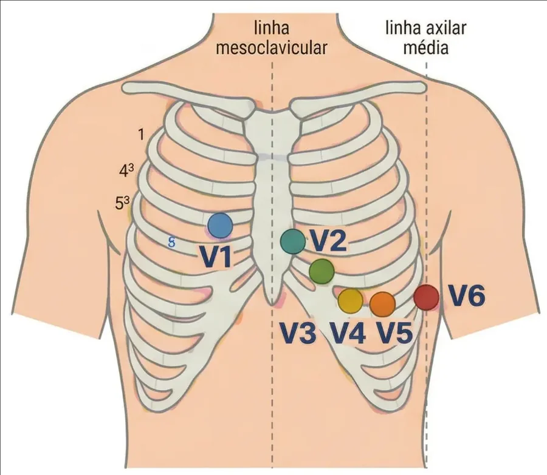
Cada derivação enxerga uma região. As inferiores são DII, DIII e aVF; as laterais altas, DI e aVL; as septais, V1 e V2; as anteriores, V3 e V4; as laterais baixas, V5 e V6. aVR olha o coração de fora, do ombro direito, e é a única que enxerga a cavidade — daí ser normalmente negativa e daí seu supradesnivelamento ter significado próprio. Derivações extras cobrem territórios cegos: V7 a V9, na parede posterior, e V3R e V4R, à direita, para o ventrículo direito.
O eletrocardiógrafo desenha sobre papel padronizado, que corre a 25 mm/s com ganho de 10 mm/mV. Disso decorre toda a métrica do exame:
| No papel | Horizontal (tempo) | Vertical (amplitude) |
|---|---|---|
| 1 quadrado pequeno (1 mm) | 0,04 s — 40 ms | 0,1 mV |
| 1 quadrado grande (5 mm) | 0,20 s — 200 ms | 0,5 mV |
| Em 1 minuto | 1500 pequenos · 300 grandes | — |
Guardar esses dois números — quadradinho de 40 ms, quadradão de 200 ms — dispensa decorar quase todos os valores de referência. O PR normal vai de 3 a 5 quadradinhos. O QRS normal cabe em 3. O limite do QRS largo é exatamente 3 quadradinhos. O quadradão é o limite superior do PR.
A troca de eletrodos merece parágrafo próprio porque é comum e imita doença. A inversão dos braços direito e esquerdo produz P e QRS negativos em DI com aVR positiva — padrão que, se lido como verdadeiro, vira dextrocardia ou infarto lateral. A regra de tela é simples: P negativa em DI, com precordiais de progressão normal, é troca de eletrodo até prova em contrário; na dextrocardia verdadeira as precordiais também perdem a progressão da onda R.
Interpretar ECG não é reconhecer padrões de memória: é percorrer sempre a mesma lista, na mesma ordem, para que o achado apareça mesmo quando não se estava procurando por ele. A ordem abaixo tem uma lógica — vai do que define o ritmo ao que define a urgência.
flowchart TD A["Traçado em mãos"] --> B["Técnica: 25 mm/s, 10 mm/mV,
calibração, identificação"] B --> C["Frequência: 1500 ÷ quadradinhos
ou 300 ÷ quadradões"] C --> D{"Há onda P antes
de cada QRS?"} D -->|"não"| E["Definir o ritmo:
FA, flutter, juncional, ventricular"] D -->|"sim, P+ em DII e P− em aVR"| F["Ritmo sinusal"] F --> G["Intervalo PR:
curto, normal ou longo"] E --> H G --> H["Largura do QRS:
< 120 ms ou ≥ 120 ms"] H --> I["Eixo por DI e aVF"] I --> J["Morfologia: P, Q patológica,
voltagem, progressão de R"] J --> K["Repolarização: ST, T, QT, U"] K --> L["Comparar com traçado anterior"]
O último passo é o mais subestimado. Um traçado antigo vale mais que qualquer critério: bloqueio de ramo esquerdo novo tem significado diferente de bloqueio antigo; onda Q que já existia não é infarto de hoje; supradesnivelamento estável há anos é aneurisma, não oclusão.
Como o papel corre a 25 mm/s, em um minuto passam 1500 quadradinhos. Daí o método dos 1500: conte os quadradinhos entre dois picos R e divida 1500 pelo resultado. Vinte quadradinhos entre R e R equivalem a 75 bpm. É o método exato, e é o que se usa quando a frequência importa numericamente.
O método dos 300 é a versão de cabeceira, para ritmos regulares: em um minuto passam 300 quadrados grandes, então a sequência 300 · 150 · 100 · 75 · 60 · 50 corresponde a um, dois, três, quatro, cinco e seis quadradões entre os R. Achar um pico R que caia sobre uma linha grossa e contar as linhas até o próximo R dá a frequência em três segundos.
Em ritmos irregulares — fibrilação atrial acima de todos — nenhum dos dois serve, porque o intervalo RR muda a cada batimento. Aí a saída é contar os complexos em uma tira de 10 segundos e multiplicar por 6. É por isso que o traçado padrão tem exatamente 10 segundos de duração.
O eixo elétrico é a média dos vetores de despolarização ventricular no plano frontal. Num coração normal ele aponta para baixo e para a esquerda, entre −30° e +90°, porque o ventrículo esquerdo tem mais massa e está posicionado nessa direção.
A determinação começa por conferir que o ritmo é sinusal e prossegue com duas derivações apenas — DI e aVF, que são perpendiculares entre si e dividem o círculo em quatro quadrantes:
| DI | aVF | Quadrante | Leitura |
|---|---|---|---|
| positivo | positivo | −30° a +90° | eixo normal |
| positivo | negativo | 0° a −90° | desvio à esquerda |
| negativo | positivo | +90° a +180° | desvio à direita |
| negativo | negativo | −90° a ±180° | zona indeterminada |
DI positivo joga o vetor para a esquerda; aVF positivo joga o vetor para baixo. A combinação dos dois já entrega o quadrante, e na maioria das vezes isso basta. Quando o ângulo exato importa, procure a derivação isodifásica no plano frontal — aquela cujo QRS tem componentes positivo e negativo de amplitudes iguais. O eixo está a 90° dela, do lado indicado pelo quadrante já definido. Quando nenhuma derivação é perfeitamente isodifásica, a alternativa prática é achar a derivação frontal com a maior onda R: o eixo aponta aproximadamente na direção dela.
Dois desvios têm nome e significado próprios. O desvio à esquerda além de −45°, com padrão qR em DI e aVL e rS nas inferiores, define o bloqueio divisional ântero-superior. O desvio à direita em adulto sem doença pulmonar conhecida pede busca por sobrecarga ventricular direita, bloqueio divisional póstero-inferior ou — de novo — troca de eletrodos.
A onda P normal dura menos de 110 ms e mede menos de 2,5 mm de altura. Sua metade inicial é o átrio direito e a final o átrio esquerdo — o que explica por que sobrecarga direita muda a altura e sobrecarga esquerda muda a largura.
Uma observação de vocabulário que a prova cobra: no eletrocardiograma se diz sobrecarga, não hipertrofia. O traçado mostra sobrecarga elétrica; hipertrofia é diagnóstico estrutural e exige ecocardiograma.
O critério principal é a onda P apiculada com amplitude maior que 2,5 mm em DII, DIII e aVF — a chamada P pulmonale — com duração normal, porque o átrio direito despolariza primeiro e seu aumento não prolonga a onda total. Em V1 e V2 a amplitude ultrapassa 1,5 mm. Pode haver desvio do eixo para a direita.
Há um sinal indireto útil: o sinal de Peñaloza-Tranchesí, que é o QRS de baixa voltagem em V1 com aumento significativo da voltagem em V2. Ele aparece quando o átrio direito dilatado se interpõe entre o coração e o eletrodo de V1. Sobrecarga atrial direita isolada é rara — quase sempre acompanha sobrecarga ventricular direita, porque a condição que sobrecarrega um também sobrecarrega o outro.
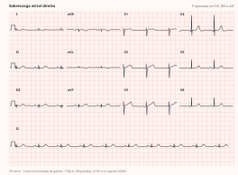
Aqui o que muda é a duração. A onda P passa de 120 ms em DII e ganha um entalhe com dois picos separados por mais de 40 ms — a P mitrale, que reflete o atraso na despolarização do átrio esquerdo. Em V1 aparece o critério de maior especificidade: o componente final negativo, com amplitude acima de 1 mm e duração acima de 40 ms.
Esses dois números geram o índice de Morris: multiplicar a duração da fase negativa em V1 (em ms) pela sua amplitude (em mm). Produto acima de 40 mm·ms — isto é, 0,04 mm·s — é positivo e tem alta especificidade para sobrecarga atrial esquerda. O índice reaparece adiante, valendo três pontos no escore de Romhilt-Estes.
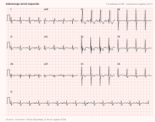
Quando os dois conjuntos coexistem no mesmo traçado — P com mais de 2,5 mm de amplitude e mais de 120 ms de duração —, o diagnóstico é sobrecarga biatrial.
O complexo tem três componentes possíveis, nomeados pela ordem e pela polaridade. Q é a primeira deflexão negativa e corresponde à despolarização septal. R é qualquer deflexão positiva. S é a deflexão negativa que vem depois de uma R. Um segundo pico positivo é R'. Letras maiúsculas indicam ondas amplas, minúsculas indicam ondas pequenas — daí a notação rSR' do bloqueio de ramo direito, em que a R inicial é pequena, a S é profunda e a R' é proeminente.
Nas precordiais, o normal é a progressão da onda R: predominantemente negativo em V1, com R crescendo e S diminuindo até V6, e a transição (R = S) caindo entre V3 e V4. Perda dessa progressão é um dos achados que faz suspeitar de infarto anterior antigo.
Os critérios de voltagem são muitos porque nenhum é bom sozinho: o eletrocardiograma tem especificidade alta e sensibilidade baixa para hipertrofia. Os três mais usados:
| Índice | Como calcular | Corte |
|---|---|---|
| Sokolow-Lyon | S em V1 + R em V5 ou V6 | ≥ 35 mm |
| Cornell | R em aVL + S em V3 | ≥ 28 mm (homens) ≥ 20 mm (mulheres) |
| Lewis | (R em DI + S em DIII) − (R em DIII + S em DI) | > 17 mm |
| R de aVL isolada | amplitude da R em aVL | > 11 mm |
O escore de Romhilt-Estes combina voltagem, repolarização, átrio, eixo e duração num sistema de pontos, e é o que mais se aproxima de um critério composto:
| Critério de Romhilt-Estes | Pontos |
|---|---|
| Amplitude: R ou S ≥ 20 mm no plano frontal, ou S em V1–V2 ≥ 30 mm, ou R em V5–V6 ≥ 30 mm | 3 |
| Padrão de strain (ST-T em direção oposta ao QRS) sem digital | 3 |
| Índice de Morris positivo (sobrecarga atrial esquerda) | 3 |
| Desvio do eixo além de −30° | 2 |
| Duração do QRS ≥ 90 ms | 1 |
| Deflexão intrinsecoide ≥ 50 ms em V5 ou V6 | 1 |
| Padrão de strain sob ação do digital | 1 |
Soma ≥ 5 fecha o diagnóstico; soma de 4 é hipertrofia provável.
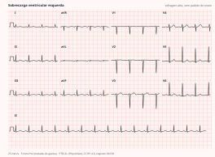
O achado central é a inversão da relação normal em V1: onda R maior que a onda S, isto é, R/S > 1 em V1. Somam-se o desvio do eixo para a direita, tipicamente próximo de +90° e podendo alcançar +110°, e o índice de amplitude R em V1 + S em V5–V6 maior que 10,5 mm. A morfologia varia com a gravidade: rsR' é o padrão trifásico; qRs indica sobrecarga significativa; qR puro, sem onda S, com T invertida — o strain de ventrículo direito — é a forma grave.
O intervalo PR vai do início da onda P ao início do QRS e inclui a ativação atrial mais o retardo fisiológico no nó AV. O normal é 120 a 200 ms — de 3 a 5 quadradinhos. Toda a família dos bloqueios atrioventriculares se organiza pela análise desse intervalo, e a distinção que importa é entre atraso (o impulso chega, mas demora) e bloqueio (o impulso não chega).
PR maior que 200 ms, fixo, com toda onda P conduzindo um QRS. Não há batimento perdido — daí a discussão sobre se merece o nome de bloqueio. Costuma ser supra-hissiano, é assintomático na maioria e raramente exige tratamento. Vale como sinal precoce de doença degenerativa do sistema de condução, e pode ser a face eletrocardiográfica de uma miocardite.
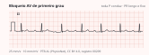
Aqui uma ou mais ondas P deixam de conduzir, e a diferença entre os dois tipos está no que acontece antes da falha.
No Mobitz I, o fenômeno de Wenckebach, o PR se alonga progressivamente a cada batimento até que uma P é bloqueada; depois da pausa o ciclo recomeça com o PR mais curto da série. A localização é geralmente supra-hissiana, o prognóstico costuma ser bom e o tratamento raramente é necessário. Um detalhe que a prova cobra: como o incremento do PR diminui a cada batimento, o intervalo RR encurta progressivamente antes da pausa.
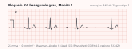
No Mobitz II, o PR é fixo e a falha de condução chega sem aviso: uma P simplesmente não conduz. A localização é geralmente infra-hissiana — abaixo do nó AV, no His ou nos ramos —, o que explica o QRS frequentemente largo e a gravidade maior. Mesmo oligossintomático, o Mobitz II impõe avaliação para marca-passo definitivo.
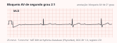
Duas situações fogem da dicotomia. O BAV 2:1 — duas ondas P para cada QRS — não permite classificar em Mobitz I ou II, porque não há dois PR consecutivos conduzidos para comparar; pode ser supra ou infra-hissiano. O BAV avançado tem mais de duas ondas P para cada QRS conduzido e traz alto risco de evolução para bloqueio total.
No bloqueio total, nenhum impulso atrial atravessa o nó AV. Átrios e ventrículos batem de forma completamente independente, e o traçado mostra dissociação atrioventricular: ondas P marchando no seu próprio ritmo, complexos QRS marchando em outro, sem relação fixa entre eles. O ventrículo é mantido por um ritmo de escape — juncional, mais rápido e de QRS estreito, ou ventricular, mais lento e de QRS largo. QRS muito alargado somado a escape lento é o cenário de pior prognóstico.
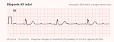
Bloqueio de ramo é atraso na condução dentro dos ventrículos. O critério fundamental é o mesmo para os dois lados: QRS com duração ≥ 120 ms. O que muda é a morfologia, e ela indica qual ramo falhou.
No bloqueio de ramo direito, o estímulo desce pelo ramo esquerdo, despolariza o ventrículo esquerdo no tempo normal e só depois alcança o direito, de forma tardia e aberrante. O resultado é o rsR' em V1 e V2 — as "orelhas de coelho" — com onda S empastada em DI, aVL, V5 e V6 e onda T assimétrica, oposta ao retardo final do QRS. O bloqueio de ramo direito pode existir em coração normal.
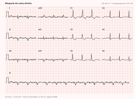
No bloqueio de ramo esquerdo a sequência se inverte, e com ela a despolarização septal. Aparecem onda R larga e entalhada em V5, V6, DI e aVL, ausência de onda q septal nessas derivações, infradesnivelamento de ST e T invertida nas derivações esquerdas e supradesnivelamento em V1 e V2 — alterações de repolarização que são secundárias ao distúrbio de condução, não isquêmicas. Ao contrário do direito, o bloqueio de ramo esquerdo raramente ocorre em coração normal: encontrá-lo obriga a investigar doença estrutural.
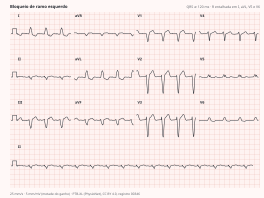
Toda análise de arritmia começa pela mesma pergunta: o ritmo é sinusal? São três condições simultâneas — onda P positiva em DI, DII e aVF e negativa em aVR; toda P conduzindo um QRS, com PR constante; e intervalos RR regulares, com frequência entre 60 e 100 bpm.
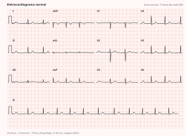
A taquicardia sinusal (> 100 bpm) e a bradicardia sinusal (< 60 bpm) mantêm todas as características do ritmo sinusal e diferem apenas na frequência. Nenhuma das duas é diagnóstico: são consequências, e o trabalho é achar a causa.
A fibrilação atrial é a arritmia sustentada mais frequente na prática clínica. Resulta de ativação atrial descoordenada e caótica, com frequência atrial de 350 a 500 por minuto. No traçado isso produz dois achados que se sustentam mutuamente: ausência de onda P organizada, substituída por ondulação fina ou grosseira da linha de base — as ondas "f" —, e intervalos RR irregularmente irregulares, porque o nó AV deixa passar os impulsos de forma imprevisível.
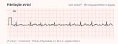
O flutter atrial é o oposto organizado: um circuito de reentrada, geralmente no átrio direito, gera atividade atrial regular a cerca de 300 por minuto, com o aspecto de dente de serra mais visível nas derivações inferiores e em V1. Como o nó AV não conduz todos os impulsos, a condução costuma ser 2:1 — o que coloca a frequência ventricular perto de 150 bpm, número que deve sempre acender a suspeita de flutter.
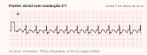
O impacto clínico da fibrilação atrial não está no traçado, e sim no risco de fenômenos tromboembólicos — o que faz da anticoagulação, e não do controle do ritmo, a decisão que mais muda desfecho. Hipertensão, diabetes, doença valvar, infarto e insuficiência cardíaca são os fatores de risco a procurar; a prevalência sobe acentuadamente após os 75 anos.
A contração ventricular prematura é a arritmia ventricular mais comum. No traçado é um QRS precoce, largo e bizarro, com duração de pelo menos 120 ms na maioria das derivações, sem onda P precedente e seguido de pausa compensadora — o batimento sinusal seguinte chega no horário que chegaria se nada tivesse acontecido, porque o nó sinusal não foi despolarizado pela extrassístole.
Quando as extrassístoles guardam relação fixa com os batimentos normais, ganham nome: bigeminismo é uma extrassístole para cada sinusal; trigeminismo, uma para cada dois. No contexto de infarto agudo, extrassístoles ventriculares frequentes marcam risco de degeneração para taquicardia e fibrilação ventricular.
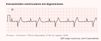
A taquicardia ventricular é definida por três ou mais complexos ventriculares consecutivos, com frequência tipicamente entre 120 e 200 bpm. O traçado mostra QRS largos, regulares e monomórficos, sem ondas P visíveis. Três achados fecham o diagnóstico quando presentes: dissociação atrioventricular, batimento de captura (um complexo estreito no meio da taquicardia, quando um impulso sinusal consegue atravessar) e batimento de fusão (morfologia intermediária entre o estreito e o largo).
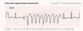
A fibrilação ventricular é o caos elétrico completo: nenhum complexo identificável, ondulação de amplitude e frequência variáveis, débito cardíaco zero. É parada cardíaca — reanimação e desfibrilação imediatas, sem espera por exame nenhum.
Duas afirmações organizam o tema. A primeira é operacional: o eletrocardiograma deve ser feito e interpretado em até 10 minutos da chegada. A segunda é limitadora e frequentemente esquecida: apenas cerca de metade dos infartos mostra alteração no primeiro traçado. Exames seriados a cada 15 a 30 minutos elevam a detecção para perto de 85%. Eletrocardiograma normal não afasta síndrome coronariana aguda.
A localização se faz pela regra da contiguidade: as alterações devem estar em pelo menos duas derivações contíguas, com imagem em espelho nas derivações opostas quando há oclusão total.
| Território | Derivações | Artéria provável |
|---|---|---|
| Septal | V1–V2 | descendente anterior |
| Anterior | V1–V4 | descendente anterior |
| Anterior extenso | V1–V6, DI, aVL | descendente anterior proximal |
| Lateral | DI, aVL, V5–V6 | circunflexa |
| Inferior | DII, DIII, aVF | coronária direita ou circunflexa |
| Posterior | V7–V9 (com infra em V1–V3) | coronária direita ou circunflexa |
| Ventrículo direito | V3R–V4R | coronária direita |
A divisão que define a conduta é entre com e sem supradesnivelamento. A síndrome com supra traduz oclusão total da coronária: o diagnóstico é clínico e eletrocardiográfico, a troponina não é esperada para decidir, e quanto mais derivações acometidas maior a área de necrose. A síndrome sem supra traduz oclusão parcial, engloba o infarto sem supra e a angina instável, e o que a confirma é a troponina; no traçado aparecem infradesnivelamento de ST, elevação transitória do ST ou inversão da onda T — e o exame pode ser normal.
A evolução temporal do infarto com supra segue uma sequência reconhecível: ondas T apiculadas (hiperagudas, as primeiras e as mais fugazes) → supradesnivelamento de ST → inversão da onda T → onda Q patológica.
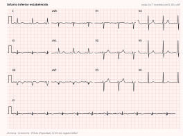
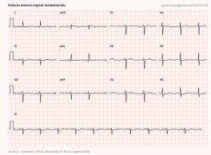
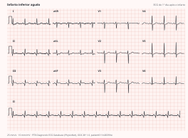
O intervalo QT vai do início do QRS ao fim da onda T e representa a sístole elétrica ventricular inteira. Como varia com a frequência, usa-se o QT corrigido; a fórmula de Bazett divide o QT pela raiz quadrada do intervalo RR em segundos. Considera-se prolongado acima de 450 ms em homens e 460 ms em mulheres; acima de 500 ms o risco de arritmia é substancial.
A importância do QT longo é uma só: ele é o substrato da torsades de pointes — taquicardia ventricular polimórfica em que o eixo do QRS gira em torno da linha de base, produzindo o aspecto de fita torcida. Pode terminar espontaneamente ou degenerar em fibrilação ventricular.
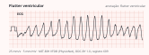
Duas famílias de causas aparecem com frequência desproporcional. Entre os fármacos que prolongam o QT: cloroquina e hidroxicloroquina, antimoniais, antiarrítmicos das classes IA e III, macrolídeos, quinolonas, antipsicóticos e antidepressivos tricíclicos. Entre os distúrbios eletrolíticos: hipocalemia, hipomagnesemia e hipocalcemia.
A hipocalemia merece destaque porque tem traçado próprio e é a via mais comum até a torsades no paciente internado: onda T achatada, infradesnivelamento discreto de ST e onda U proeminente — frequentemente com fusão entre T e U, que é o que produz o "QT longo" medido. Os culpados habituais são os diuréticos de alça e tiazídicos.
No extremo oposto, a hipercalemia produz ondas T altas, apiculadas e de base estreita, seguidas de achatamento da onda P, alargamento progressivo do QRS e, no limite, o ritmo sinusoidal que antecede a assistolia. É o distúrbio eletrolítico que mais rapidamente mata, e o traçado alterado indica cálcio intravenoso imediato para estabilizar a membrana, antes de qualquer medida para baixar o potássio.
Na pré-excitação existe uma via acessória ligando átrio e ventrículo por fora do sistema de condução normal. Como essa via não tem o retardo fisiológico do nó AV, parte do ventrículo é ativada antes do que seria — daí o nome — e a despolarização começa devagar, célula a célula, pelo miocárdio comum.
Os três achados no traçado decorrem diretamente disso: PR curto (menor que 120 ms), porque o impulso pulou o retardo nodal; onda delta, o empastamento inicial lento do QRS, que é a assinatura da ativação pelo miocárdio comum; e QRS alargado, que é a soma da onda delta com o QRS normal que chega logo em seguida pelo sistema His-Purkinje. Nas vias do lado esquerdo — o chamado tipo A — soma-se onda R dominante em V1.
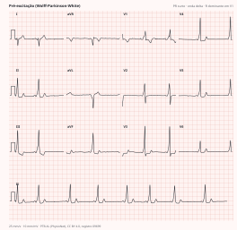
A maioria dos portadores é assintomática; alguns apresentam taquicardia supraventricular por reentrada, palpitações ou síncope. Nos assintomáticos, o eletrocardiograma é o único meio diagnóstico.
Cerca de 90% das síncopes de origem cardíaca apresentam alteração no eletrocardiograma, o que faz do exame a primeira triagem — e a mais barata — para separar quem pode ir para casa de quem precisa ser investigado. Os achados que mudam o destino do paciente:
| Achado | O que sugere |
|---|---|
| Bloqueio bifascicular | doença avançada do sistema de condução |
| QRS ≥ 120 ms | substrato de arritmia ventricular |
| Bradicardia sinusal < 40–50 bpm | disfunção do nó sinusal |
| QT > 450 ms ou < 300 ms | síndrome do QT longo ou curto |
| Inversão de T de V1 a V3, ondas épsilon | cardiomiopatia arritmogênica do VD |
| Padrão de Brugada tipo 1 | canalopatia com risco de morte súbita |
| Ondas Q sugerindo infarto prévio | substrato de taquicardia ventricular |
| Taquicardia ventricular registrada | investigação imediata |
Aplicar critério de voltagem sem olhar a calibração. Metade do ganho reduz todas as amplitudes pela metade; o pulso retangular no início da linha é a única forma de saber. Vale também o inverso: alguns aparelhos imprimem com ganho dobrado em traçados de baixa voltagem.
Chamar de bloqueio o que é papel a 50 mm/s. Todos os intervalos dobram; o PR de 160 ms vira 320 ms na régua errada.
Ler a repolarização do bloqueio de ramo esquerdo como isquemia. O infra de ST e a T invertida nas derivações esquerdas, e o supra em V1–V2, são secundários ao distúrbio de condução. Para diagnosticar infarto sobre bloqueio de ramo esquerdo existem critérios próprios, os de Sgarbossa.
Interpretar troca de eletrodos como doença. P e QRS negativos em DI com aVR positiva, e precordiais normais, é inversão dos braços — não dextrocardia nem infarto lateral.
Diagnosticar Brugada em V1–V2 posicionados alto. Um espaço intercostal acima produz rSR' e alterações de ST que somem quando o eletrodo volta ao lugar.
Descartar síndrome coronariana porque o traçado é normal. Metade dos infartos não aparece no primeiro exame. A conduta é seriar, não arquivar.
Confundir sobrecarga com hipertrofia. O eletrocardiograma indica sobrecarga elétrica; a confirmação estrutural é do ecocardiograma. Escrever "hipertrofia ventricular esquerda" num laudo de ECG é afirmar mais do que o exame permite.
Usar a régua errada para a deflexão intrinsecoide. O normal vai até 40–45 ms; o ponto no escore de Romhilt-Estes só é marcado a partir de 50 ms.
Bloquear o nó AV numa fibrilação atrial pré-excitada. É o erro que mata mais rápido dentre os listados aqui.